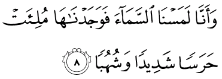
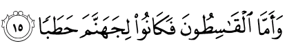

In the name of Allah, the Most Beneficent, the Most Merciful.
1. qul uuhiya ilayya annahu istama’a nafarun mina aljinni faqaaluu innaa sami’naa qur-aanan ‘ajabaan
Katakanlah (hai Muhammad): "Telah diwahyukan kepadaku bahwasanya: sekumpulan jin telah mendengarkan (Al Qur'an), lalu mereka berkata: "Sesungguhnya kami telah mendengarkan Al Qur'an yang menakjubkan,
2. yahdii ilaa alrrusydi faaamannaa bihi walan nusyrika birabbinaa ahadaan
(yang) memberi petunjuk kepada jalan yang benar, lalu kami beriman kepadanya. Dan kami sekali-kali tidak akan mempersekutukan seorang pun dengan Tuhan kami,
3. wa-annahu ta’aalaa jaddu rabbinaa maa ittakhadza shaahibatan walaa waladaan
dan bahwasanya Maha Tinggi kebesaran Tuhan kami, Dia tidak beristri dan tidak (pula) beranak.
4. wa-annahu kaana yaquulu safiihunaa ‘alaa allaahi syathathaan
Dan bahwasanya: orang yang kurang akal daripada kami dahulu selalu mengatakan (perkataan) yang melampaui batas terhadap Allah,
5. wa-annaa zhanannaa an lan taquula al-insu waaljinnu ‘alaa allaahi kadzibaan
dan sesungguhnya kami mengira, bahwa manusia dan jin sekali-kali tidak akan mengatakan perkataan yang dusta terhadap Allah.
6. wa-annahu kaana rijaalun mina al-insi ya’uudzuuna birijaalin mina aljinni fazaaduuhum rahaqaan
Dan bahwasanya ada beberapa orang laki-laki di antara manusia meminta perlindungan kepada beberapa laki-laki di antara jin, maka jin- jin itu menambah bagi mereka dosa dan kesalahan.
7. wa-annahum zhannuu kamaa zhanantum an lan yab’atsa allaahu ahadaan
Dan sesungguhnya mereka (jin) menyangka sebagaimana persangkaan kamu (orang-orang kafir Mekah), bahwa Allah sekali-kali tidak akan membangkitkan seorang (rasul) pun,

8. wa-annaa lamasnaa alssamaa-a fawajadnaahaa muli-at harasan syadiidan wasyuhubaan
dan sesungguhnya kami telah mencoba mengetahui (rahasia) langit, maka kami mendapatinya penuh dengan penjagaan yang kuat dan panah-panah api,
9. wa-annaa kunnaa naq’udu minhaa maqaa’ida lilssam’i faman yastami’i al-aana yajid lahu syihaaban rashadaan
dan sesungguhnya kami dahulu dapat menduduki beberapa tempat di langit itu untuk mendengar-dengarkan (berita-beritanya). Tetapi sekarang barang siapa yang (mencoba) mendengar-dengarkan (seperti itu) tentu akan menjumpai panah api yang mengintai (untuk membakarnya).
10. wa-annaa laa nadrii asyarrun uriida biman fii al-ardhi am araada bihim rabbuhum rasyadaan
Dan sesungguhnya kami tidak mengetahui (dengan adanya penjagaan itu) apakah keburukan yang dikehendaki bagi orang yang di bumi ataukah Tuhan mereka menghendaki kebaikan bagi mereka.
11. wa-annaa minnaa alshshaalihuuna waminnaa duuna dzaalika kunnaa tharaa-iqa qidadaanithataradda
Dan sesungguhnya di antara kami ada orang-orang yang saleh dan di antara kami ada (pula) yang tidak demikian halnya. Adalah kami menempuh jalan yang berbeda-beda
12. wannaa zhanannaa an lan nu’jiza allaaha fii al-ardhi walan nu’jizahu harabaan
Dan sesungguhnya kami mengetahui, bahwa kami sekali-kali tidak akan dapat melepaskan diri (dari kekuasaan) Allah di muka bumi dan sekali- kali tidak (pula) dapat melepaskan diri (daripada) Nya dengan lari.
13. wa-annaa lammaa sami’naa alhudaa aamannaa bihi faman yu/min birabbihi falaa yakhaafu bakhsan walaa rahaqaan
Dan sesungguhnya kami tatkala mendengar petunjuk (Al Qur'an), kami beriman kepadanya. Barang siapa beriman kepada Tuhannya, maka ia tidak takut akan pengurangan pahala dan tidak (takut pula) akan penambahan dosa dan kesalahan.

14. wa-annaa minnaa almuslimuuna waminnaa alqaasithuuna faman aslama faulaa-ika taharraw rasyadaan
Dan sesungguhnya di antara kami ada orang-orang yang taat dan ada (pula) orang-orang yang menyimpang dari kebenaran. Barang siapa yang taat, maka mereka itu benar-benar telah memilih jalan yang lurus.

15. wa-amaa alqaasithuuna fakaanuu lijahannama hathabaan
Adapun orang-orang yang menyimpang dari kebenaran, maka mereka menjadi kayu api neraka Jahanam".
16. wa-allawi istaqaamuu ‘alaa alththhariiqati la-asqaynaahum maa-an ghadaqaan
Dan bahwasanya: jika mereka tetap berjalan lurus di atas jalan itu (agama Islam), benar-benar Kami akan memberi minum kepada mereka air yang segar (rezeki yang banyak).
17. linaftinahum fiihi waman yu’ridh ‘an dzikri rabbihi yasluk-hu ‘adzaaban sha’adaan
Untuk Kami beri cobaan kepada mereka padanya. Dan barang siapa yang berpaling dari peringatan Tuhannya, niscaya akan dimasukkan-Nya ke dalam azab yang amat berat.
18. wa-anna almasaajida lillaahi falaa tad’uu ma’a allaahi ahadaan
Dan sesungguhnya mesjid-mesjid itu adalah kepunyaan Allah. Maka janganlah kamu menyembah seseorang pun di dalamnya di samping (menyembah) Allah.
19. wa-annahu lammaa qaama ‘abdu allaahi yad’uuhu kaaduu yakuunuuna ‘alayhi libadaan
Dan bahwasanya tatkala hamba Allah (Muhammad) berdiri menyembah-Nya (mengerjakan ibadah), hampir saja jin-jin itu desak mendesak mengerumuninya.
20. qul innamaa ad’uu rabbii walaa usyriku bihi ahadaan
Katakanlah: "Sesungguhnya aku hanya menyembah Tuhanku dan aku tidak mempersekutukan sesuatu pun dengan-Nya".
21. qul innii laa amliku lakum dharran walaa rasyadaan
Katakanlah: "Sesungguhnya aku tidak kuasa mendatangkan sesuatu kemudaratan pun kepadamu dan tidak (pula) sesuatu kemanfaatan".
22. qul innii lan yujiiranii mina allaahi ahadun walan ajida min duunihi multahadaan
Katakanlah: "Sesungguhnya aku sekali-kali tiada seorang pun yang dapat melindungiku dari (azab) Allah dan sekali-kali tiada akan memperoleh tempat berlindung selain daripada-Nya".
23. illaa balaaghan mina allaahi warisaalaatihi waman ya’shi allaaha warasuulahu fa-inna lahu naara jahannama khaalidiina fiihaa abadaan
Akan tetapi (aku hanya) menyampaikan (peringatan) dari Allah dan risalah-Nya. Dan barang siapa yang mendurhakai Allah dan Rasul-Nya maka sesungguhnya baginyalah neraka Jahanam, mereka kekal di dalamnya selama-lamanya.
24. hattaa idzaa ra-aw maa yuu’aduuna fasaya’lamuuna man adh’afu naasiran wa-aqallu ‘adadaan
Sehingga apabila mereka melihat azab yang diancamkan kepada mereka, maka mereka akan mengetahui siapakah yang lebih lemah penolongnya dan lebih sedikit bilangannya.
25. qul in adrii aqariibun maa tuu’aduuna am yaj’alu lahu rabbii amadaan
Katakanlah: "Aku tidak mengetahui, apakah azab yang diancamkan kepadamu itu dekat ataukah Tuhanku menjadikan bagi (kedatangan) azab itu, masa yang panjang?".
26. aalimu alghaybi falaa yuzhhiru ‘alaa ghaybihi ahadaan
(Dia adalah Tuhan) Yang Mengetahui yang gaib, maka Dia tidak memperlihatkan kepada seorang pun tentang yang gaib itu.
27.illaa mani irtadaa min rasuulin fa-innahu yasluku min bayni yadayhi wamin khalfihi rashadaan
Kecuali kepada rasul yang diridai-Nya, maka sesungguhnya Dia mengadakan penjaga-penjaga (malaikat) di muka dan di belakangnya.
28. liya’lama an qad ablaghuu risaalaati rabbihim wa-ahatha bimaa ladayhim wa-ahsaa kulla syay-in ‘adadaan
Supaya Dia mengetahui, bahwa sesungguhnya rasul-rasul itu telah menyampaikan risalah-risalah Tuhannya, sedang (sebenarnya) ilmu-Nya meliputi apa yang ada pada mereka, dan Dia menghitung segala sesuatu satu persatu.